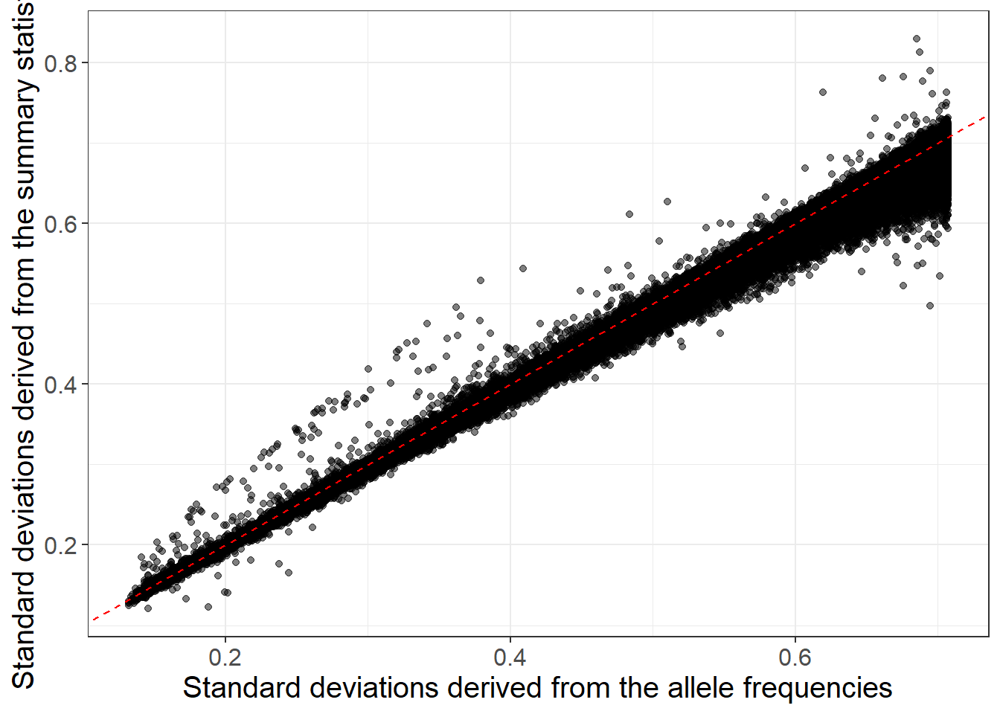
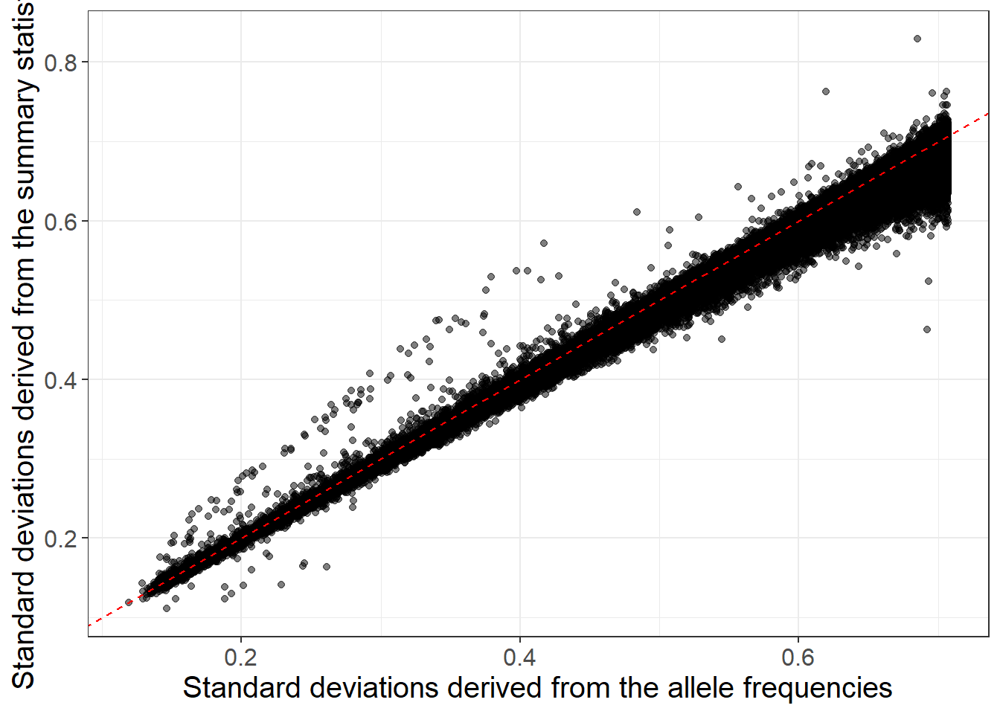

Chapter 6 GWAS summary statistics
When genome-wide association studies (GWAS) were first introduced to explore genetic factors associated with diseases, researchers may not have realized how valuable the resulting GWAS summary statistics would be. Over the past decade, GWAS summary statistics have become essential for many genetic analyses.
The summary statistics generated by GWAS do not include personal information, making GWAS summary statistics easy to share and use for further analysis. Collaboration among researchers in large consortia has facilitated meta-analyses of GWAS summary statistics from numerous study sites, resulting in unprecedentedly large GWAS sample sizes (Levey et al., 2021; Okbay et al., 2022; Suzuki et al., 2023; Yengo et al., 2022; Zhou et al., 2022).
6.1 Format
This an example of GWAS summary statistics (a subset of it at least).
Fields included in GWAS summary statistics and their specific names in the header of the file can change very much from one file to the other; this is why tools like MungeSumstats have been developed (Murphy, Schilder, & Skene, 2021).
tgz <- runonce::download_file(
"https://figshare.com/ndownloader/files/55262768",
dir = "tmp-data", fname = "FT_sumstats_small.tsv.gz")
writeLines(readLines(tgz, n = 6))#> variant_id chromosome base_pair_location effect_allele other_allele effect_allele_frequency imputation_quality beta standard_error p_value
#> rs72858371 1 6409383 T C 0.986224 0.977552 -0.00615364 0.0108886 0.64
#> rs72633437 1 6409494 C T 0.906138 0.988959 0.00289667 0.00434703 0.39
#> rs151043271 1 6409495 G A 0.998537 0.732147 -0.0244749 0.0386808 0.4
#> rs58484986 1 6409653 C G 0.986228 0.976894 -0.00623617 0.0108958 0.63
#> rs60772726 1 6409662 A T 0.986228 0.976844 -0.00625052 0.0108957 0.63They often include
Information to match variants (chromosome, physical position, alleles, rsid).
\(\hat{\beta}_j\) or \(\hat{\gamma}_j\) — the GWAS effect size of variant \(j\) (marginal effect),
\(\text{se}(\hat{\gamma}_j)\) — its standard error,
\(z_j = \frac{\hat{\gamma}_j}{\text{se}(\hat{\gamma}_j)}\) — the Z-score of variant \(j\),
p-values derived from Z-scores
but they more rarely include
\(n_j\) — the GWAS sample size associated with variant \(j\),
\(f_j\) — the allele frequency of variant \(j\),
\(\text{INFO}_j\) — the imputation INFO score (imputation quality) of variant \(j\)
Why would different variants have different GWAS sample sizes?
Read-in these GWAS summary statistics and derive the p-values again, using the other columns. Recall that the Z-score squared is \(\chi^2\)-distributed with one degree of freedom.
Click to see solution
#> variant_id chromosome base_pair_location effect_allele other_allele
#> 1 rs72858371 1 6409383 T C
#> 2 rs72633437 1 6409494 C T
#> 3 rs151043271 1 6409495 G A
#> 4 rs58484986 1 6409653 C G
#> 5 rs60772726 1 6409662 A T
#> effect_allele_frequency imputation_quality beta standard_error
#> 1 0.986224 0.977552 -0.00615364 0.01088860
#> 2 0.906138 0.988959 0.00289667 0.00434703
#> 3 0.998537 0.732147 -0.02447490 0.03868080
#> 4 0.986228 0.976894 -0.00623617 0.01089580
#> 5 0.986228 0.976844 -0.00625052 0.01089570
#> p_value
#> 1 0.64
#> 2 0.39
#> 3 0.40
#> 4 0.63
#> 5 0.63
#> [ reached 'max' / getOption("max.print") -- omitted 41805 rows ]6.2 Quality control
However, pooling many GWAS summary statistics in large meta-analyses has been a double-edged sword. On the one hand, this has given much-needed power to many genetic analyses. On the other hand, the quality and standardization of GWAS summary statistics varies widely, and the more studies that are pooled together, the more issues arise when using these pooled summary data.
An overview of known issues in using GWAS summary statistics is presented in Figure 6.1. This includes weakening the construction of polygenic scores (Privé, Arbel, et al., 2022), biasing heritability estimates (Gazal et al., 2018; Grotzinger, Fuente, Privé, Nivard, & Tucker-Drob, 2023), identifying spurious causal genes (Kanai et al., 2022; Zou, Carbonetto, Wang, & Stephens, 2022), as well as undermining other genetic analyses (Chen et al., 2021; Julienne et al., 2021).
![Overview of possible errors and misspecifications in GWAS summary statistics, with possible harmful consequences, as well as possible remedies [@prive2021identifying]. $\hat{\gamma}$: GWAS effect sizes; SE: standard errors; $n^{eff}$: effective GWAS sample sizes; SD: standard deviations of genotypes; INFO: measure of imputation quality.](https://github.com/privefl/thesis-docs/blob/master/figures/overview-misspec.jpg?raw=true)
Figure 6.1: Overview of possible errors and misspecifications in GWAS summary statistics, with possible harmful consequences, as well as possible remedies (Privé, Arbel, et al., 2022). \(\hat{\gamma}\): GWAS effect sizes; SE: standard errors; \(n^{eff}\): effective GWAS sample sizes; SD: standard deviations of genotypes; INFO: measure of imputation quality.
The QC I recommend to perform consist in comparing standard deviations of genotypes estimated in 2 ways (Privé, Arbel, et al., 2022; Privé, Arbel, & Vilhjálmsson, 2020):
When linear regression was used \[\begin{equation} \text{sd}(G_j) \approx \dfrac{\text{sd}(y)}{\sqrt{n_j \cdot \text{se}(\hat{\gamma}_j)^2 + \hat{\gamma}_j^2}} \tag{6.1} \end{equation}\]
When logistic regression was used (case-control phenotype) \[\begin{equation}\label{eq:approx-sd-log} \text{sd}(G_j) \approx \dfrac{2}{\sqrt{n_j^\text{eff} \cdot \text{se}(\hat{\gamma}_j)^2 + \hat{\gamma}_j^2}}~, \tag{6.2} \end{equation}\] where \(n_\text{eff} = \frac{4}{1 / n_\text{ca} + 1 / n_\text{co}}\)
- \[\begin{equation} \text{sd}(G_j) \approx \sqrt{2 \cdot f_j \cdot (1 - f_j) \cdot \text{INFO}_j} \tag{6.3} \end{equation}\]
With this QC, you can detect differences in per-variant GWAS sample sizes

When \(n_j\) are missing, you can use this to perform some QC (e.g. at 70% of max n) or to impute \(n_j\).
You can detect bias in total effective GWAS sample size

\(N_\text{eff} = \frac{4}{1 / N_\text{ca} + 1 / N_\text{co}}\)

For example, overestimating the sample size leads to underestimating the SNP heritability in many methods such as LD score regression (Grotzinger et al., 2023).
You can detect and QC low imputation INFO scores, & other issues

Beware that multi-ancestry INFO scores are overestimated (e.g. in the UK Biobank)

Use the following GWAS results for HDL and allele frequencies to estimate standard deviations and compare both estimates. How can you estimate sd(y)?
library(bigsnpr)
obj.bigsnp <- snp_attach("tmp-data/GWAS_data_sorted_QC.rds")
NCORES <- nb_cores()
obj.svd <- readRDS("tmp-data/PCA_GWAS_data.rds")
PC <- predict(obj.svd)
covar <- cbind(as.matrix(obj.bigsnp$fam[c("sex", "age")]), PC[, 1:6])
G <- obj.bigsnp$genotypes
y <- obj.bigsnp$fam$hdl
ind.gwas <- which(!is.na(y) & complete.cases(covar))
gwas <- big_univLinReg(G, y[ind.gwas], ind.train = ind.gwas,
covar.train = covar[ind.gwas, ], ncores = NCORES)
N <- length(ind.gwas)
af <- big_colstats(G, ind.row = ind.gwas, ncores = NCORES)$sum / (2 * N)Click to see solution
#> 1%
#> 12.96917 11.84793sd_ss <- sd_y / with(gwas, sqrt(N * std.err^2 + estim^2))
sd_af <- sqrt(2 * af * (1 - af))
library(ggplot2)#> Warning: package 'ggplot2' was built under R version 4.2.3ggplot(dplyr::slice_sample(data.frame(sd_af, sd_ss), n = 100e3)) +
geom_point(aes(sd_af, sd_ss), alpha = 0.5) +
theme_bigstatsr(0.9) +
geom_abline(linetype = 2, color = "red") +
labs(x = "Standard deviations derived from the allele frequencies",
y = "Standard deviations derived from the summary statistics")
nb_na <- big_counts(G$copy(CODE_012), ind.row = ind.gwas)[4, ]
ggplot(dplyr::slice_sample(data.frame(sd_af, sd_ss, nb_na), n = 100e3)) +
geom_point(aes(sd_af, sd_ss, color = nb_na), alpha = 0.5) +
theme_bigstatsr(0.9) +
scale_color_viridis_c(direction = -1, trans = "sqrt") +
geom_abline(linetype = 2, color = "red") +
labs(x = "Standard deviations derived from the allele frequencies",
y = "Standard deviations derived from the summary statistics")
We will practice more QC on GWAS summary statistics in 8.5.
I provide some example R script in the LDpred2 tutorial that implements this QC. You can also find some other scripts with examples how to prepare several GWAS summary statistics here.
I am currently working on implementing a method that performs a complementary QC, as well as the imputation of GWAS summary statistics (i.e. GWAS results for more variants).
6.3 Ancestry inference
In 4.5, we’ve seen how to infer ancestry for individual-level data using reference data provided in Privé (2022); we can also use this to infer the ancestry composition of a GWAS dataset using only allele frequencies from the GWAS summary statistics. The tutorial accompanying Privé (2022) is here.
Reuse some of the code from 4.5 and allele frequencies (that you should compute) to get the ancestry composition of this dataset using function snp_ancestry_summary().
Click to see solution
all_freq <- bigreadr::fread2(
runonce::download_file(
"https://figshare.com/ndownloader/files/38019027", # subset for the tutorial (46 MB)
# "https://figshare.com/ndownloader/files/31620968", # for real analyses (849 MB)
dir = "tmp-data", fname = "ref_freqs.csv.gz"))
projection <- bigreadr::fread2(
runonce::download_file(
"https://figshare.com/ndownloader/files/38019024", # subset for the tutorial (44 MB)
# "https://figshare.com/ndownloader/files/31620953", # for real analyses (847 MB)
dir = "tmp-data", fname = "projection.csv.gz"))
# coefficients to correct for overfitting of PCA
correction <- c(1, 1, 1, 1.008, 1.021, 1.034, 1.052, 1.074, 1.099,
1.123, 1.15, 1.195, 1.256, 1.321, 1.382, 1.443)# match variants between the two datasets
library(dplyr)
matched <- obj.bed$map %>%
transmute(chr = chromosome, pos = physical.pos, a1 = allele1, a0 = allele2) %>%
mutate(beta = 1) %>%
snp_match(all_freq[1:5]) %>%
print()#> chr pos a0 a1 beta _NUM_ID_.ss rsid _NUM_ID_
#> 1 1 752566 G A -1 2 rs3094315 1
#> 2 1 785989 T C -1 4 rs2980300 2
#> 3 1 798959 G A 1 5 rs11240777 3
#> 4 1 947034 G A -1 6 rs2465126 4
#> 5 1 949608 G A 1 7 rs1921 5
#> 6 1 1018704 A G -1 8 rs9442372 6
#> [ reached 'max' / getOption("max.print") -- omitted 301150 rows ]When matching between variants from two datasets, sometimes physical positions are in two different genome builds, usually it can be hg19 and hg38 (for newer datasets). You will need to either convert one of the two sets of positions with snp_modifyBuild() (that uses liftOver, not available for Windows) or by matching using rsIDs instead of positions (by using join_by_pos = FALSE).
# further subsetting on missing values
counts <- bed_counts(obj.bed, ind.col = matched$`_NUM_ID_.ss`, ncores = NCORES)
ind <- which((counts[4, ] / nrow(obj.bed)) < 0.05)
matched2 <- matched[ind, ]# compute allele frequencies
af <- bed_MAF(obj.bed, ind.col = matched2$`_NUM_ID_.ss`)$af
af2 <- ifelse(matched2$beta > 0, af, 1 - af)
# get ancestry composition
res <- snp_ancestry_summary(
freq = af2,
info_freq_ref = all_freq[matched2$`_NUM_ID_`, -(1:5)],
projection = projection[matched2$`_NUM_ID_`, -(1:5)],
correction = correction
)
res#> Africa (West) Africa (South) Africa (East)
#> 0.0015918 0.0000000 0.0000000
#> Africa (North) Middle East Ashkenazi
#> 0.0000000 0.0000000 0.0824672
#> Italy Europe (South East) Europe (North East)
#> 0.2020482 0.1529422 0.0000000
#> Finland Scandinavia United Kingdom
#> 0.0051918 0.1891938 0.1510849
#> Ireland Europe (South West) South America
#> 0.2154802 0.0000000 0.0000000
#> Sri Lanka Pakistan Bangladesh
#> 0.0000000 0.0000000 0.0000000
#> Asia (East) Japan Philippines
#> 0.0000000 0.0000000 0.0000000
#> attr(,"cor_each")
#> Africa (West) Africa (South) Africa (East)
#> 0.6109985 0.6137032 0.8576549
#> Africa (North) Middle East Ashkenazi
#> 0.9560451 0.9775514 0.9809802
#> Italy Europe (South East) Europe (North East)
#> 0.9924371 0.9953612 0.9902400
#> Finland Scandinavia United Kingdom
#> 0.9782142 0.9946803 0.9975349
#> Ireland Europe (South West) South America
#> 0.9956773 0.9949990 0.9002633
#> Sri Lanka Pakistan Bangladesh
#> 0.8909370 0.9428874 0.8967786
#> Asia (East) Japan Philippines
#> 0.7286470 0.7290332 0.7343768
#> attr(,"cor_pred")
#> [1] 0.9990652group <- colnames(all_freq)[-(1:5)]
group[group %in% c("Scandinavia", "United Kingdom", "Ireland")] <- "Europe (North West)"
group[group %in% c("Europe (South East)", "Europe (North East)")] <- "Europe (East)"
grp_fct <- factor(group, unique(group))
final_res <- tapply(res, grp_fct, sum)
round(100 * final_res, 1)#> Africa (West) Africa (South) Africa (East)
#> 0.2 0.0 0.0
#> Africa (North) Middle East Ashkenazi
#> 0.0 0.0 8.2
#> Italy Europe (East) Finland
#> 20.2 15.3 0.5
#> Europe (North West) Europe (South West) South America
#> 55.6 0.0 0.0
#> Sri Lanka Pakistan Bangladesh
#> 0.0 0.0 0.0
#> Asia (East) Japan Philippines
#> 0.0 0.0 0.0